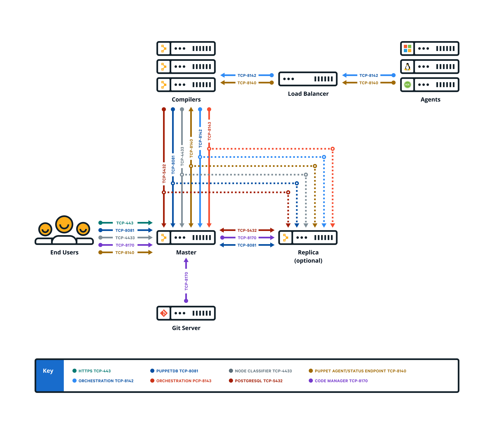

Installing compilers
As your Puppet Enterprise infrastructure scales up to 4,000 nodes and beyond, add load-balanced compilers to your installation to increase the number of agents you can manage.
Each compiler increases capacity by 1,500 to 3,000 nodes, until you exhaust the capacity of PuppetDB or the console.
How compilers work
A single master can process requests and compile code for up to 4,000 nodes. When you exceed this scale, expand your infrastructure by adding compilers to share the workload and compile catalogs faster.
https://<hostname>:8140/status/v1/simple.
Components and services running on compilers
Compilers typically run Puppet Server and PuppetDB services, as well as a file sync client. Older, legacy-style compilers must be converted in order to add PuppetDB.
When triggered by a web endpoint, file sync takes changes from the working directory on the master and deploys the code to a live code directory. File sync then deploys that code to all your compilers, ensuring that all masters in a multi-master configuration remain in sync. By default, compilers check for code updates every five seconds.
The certificate authority (CA) service is disabled on compilers. A proxy service running on the compiler Puppet Server directs CA requests to the master, which hosts the CA in default installations.
Compilers also have:
- The repository for agent installation,
pe_repo - The controller profile used with PE client tools
- Puppet Communications Protocol (PCP) brokers to enable orchestrator scale
Logs for compilers are located at /var/log/puppetlabs/puppetserver/.
Logs for PCP brokers on compilers are located at /var/log/puppetlabs/puppetserver/pcp-broker.log.
Using load balancers with compilers
When using more than one compiler, a load balancer can help distribute the load between the compilers and provide a level of redundancy.
Specifics on how to configure a load balancer infrastructure falls
outside the scope of this document, but examples of how to leverage haproxy for this purpose can be found in the HAproxy
module documentation.
Load balancing
PCP brokers run on compilers and connect to PXP agents over port 8142. PCP brokers are built on websockets and require many
persistent connections. If you're not using HTTP health checks, we recommend using a
round robin or random load balancing algorithm for PXP agent connections to PCP brokers, because PCP brokers don't operate independent of the
orchestrator and isolate themselves if they become disconnected. You can check
connections with the /status/v1/simple endpoint for an error state.
You must also configure your load balancer to avoid closing long-lived connections
that have little traffic. In the HAproxy module, you can set the timeout tunnel to 15m because PCP brokers
disconnect inactive connections after 15 minutes.
Using health checks
The Puppet REST API exposes a status endpoint that can be leveraged from a load balancer health check to ensure that unhealthy hosts do not receive agent requests from the load balancer.
The master
service responds to unauthenticated HTTP GET requests issued to https://<hostname>:8140/status/v1/simple.
The API responds with an HTTP 200 status code if the service is healthy.
If your load balancer doesn't support HTTP health checks, a simpler alternative is to check that the host is listening for TCP connections on port 8140. This ensures that requests aren't forwarded to an unreachable instance of the master, but it does not guarantee that a host is pulled out of rotation if it's deemed unhealthy, or if the service listening on port 8140 is not a service related to Puppet.
Optimizing workload distribution
Due to the diverse nature of the network communications between the agent and the master, we recommend that you implement a load balancing algorithm that distributes traffic between compilers based on the number of open connections. Load balancers often refer to this strategy as "balancing by least connections."
Install compilers
Installing a compiler adds the specified node to the PE Compiler node group and installs the PuppetDB service on the node.
puppet infrastructure provision compiler <COMPILER_FQDN>-
dns-alt-names— Comma-separated list of any alternative names that agents use to connect to compilers. The installation usespuppetby default.Note: If yourpuppet.conffile includes adns_alt_namesentry, you must include thedns-alt-namesparameter when provisioning your compiler. -
no-dns-alt-names— Prevents the installer from setting the default alternative name,puppet. Use this parameter if you don't allow alternative names (allow-subject-alt-names: falsein yourca.conf).
After installing compilers, you must configure them to appropriately route communication between your master and agent nodes.
Convert existing compilers
If you have legacy compilers, you can improve their usability and scalability by adding PuppetDB. In addition to installing the PuppetDB service, converting an existing compiler adds the node to the PE Compiler node group and unpins it from the PE Master node group.
puppet infrastructure run convert_legacy_compiler compiler=<COMPILER_FQDN-1>,<COMPILER_FQDN-2>puppet infrastructure run convert_legacy_compiler all=trueConfigure compilers
Compilers must be configured to appropriately route communication between your master and agent nodes.
Install compilers and load balancers.
If you need DNS altnames for your load balancers, add them to the master.
Ensure port 8143 is open on the master or on any workstations used to run orchestrator jobs.